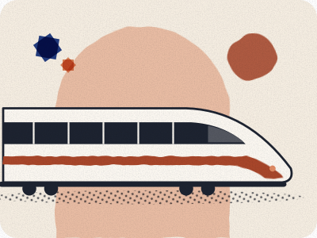

Casablanca to Marrakech by train
Direct trains run from Casa Voyageurs to Marrakech. What is checked, and what to confirm for your own date.

Direct trains run from Casa Voyageurs to Marrakech. Search your own date on ONCF for the fare and the time. This page does not print a standing fare.
One example, from a search on 28 September 2026, is a direct train at 14:43, arriving 17:37 (2 h 54 min) Source-checked 28 Sep 2026 Sources. It is not your train.
If the flight might be late, buy a fare you can change. A non-flex ticket cannot be exchanged or refunded Source-checked 28 Sep 2026 Sources.
Last updated 21 Oct 2026.
Written by Omar Oujoud in Casablanca. Research drafting is AI-assisted; observations are recorded in person. How we check
Jump to what’s still being checked · sources
How we checked
The example time is one ONCF timetable search, dated in the record, not a timetable that stays put. Ticket types, the exchange rule and the cancel window come from ONCF’s sales conditions. The luggage size is ONCF’s general maximum.
The fare for a date you will actually travel is still for you to read on the booking site. Nothing here was seen on a train.
At a glance
| Detail | What the pages support |
|---|---|
| Example journey | 14:43, arriving 17:37 (2 h 54 min) Source-checked 28 Sep 2026 Sources |
| Fare types | non-flex, semi-flex and flex fares; non-flex cannot be exchanged or refunded Source-checked 28 Sep 2026 Sources |
| Changing a ticket | depends on seats being available on the new train, and you pay any fare difference Source-checked 28 Sep 2026 Sources |
| Cancelling an e-ticket | up to 30 minutes before departure Source-checked 28 Sep 2026 Sources |
| Your fare | Not yet confirmed |
Step by step
Search your date on ONCF’s booking site for the current fare.
ONCF sells non-flex, semi-flex and flex fares; non-flex cannot be exchanged or refunded Source-checked 28 Sep 2026 Sources. Even with a flexible fare, an exchange depends on seats being available on the new train, and you pay any fare difference Source-checked 28 Sep 2026 Sources.
Online e-tickets can be cancelled up to 30 minutes before departure Source-checked 28 Sep 2026 Sources, under your fare’s conditions.
Our advice: if the flight could be late, or you have a fixed booking in Marrakech, a flexible fare can be worth the difference. A cheap ticket you cannot change is a poor match for a landing you do not control.
On the day, the e-ticket can be shown on your phone or printed Source-checked 28 Sep 2026 Sources. Luggage should fit within 1.2 m × 0.6 m × 0.4 m Source-checked 28 Sep 2026 Sources.
The edge case
Coming straight from the airport
Our advice: take the airport train to Casa Voyageurs and change there. Leave a wide gap. Passport control, baggage and the walk to the platform can use the time you thought you had. How long that whole stretch takes is not yet confirmed.
What to watch for
Our advice: three things, before you pay.
- Treating the example time as your train. It is one search, on one date. Search again.
- A non-flex fare when the flight can slip. You cannot exchange it or get the money back.
- A flexible fare with no seats on the next train. A change still needs a free seat, and you pay any difference in the fare.
Still being checked
Not yet confirmed, so not stated as fact on this page:
- A Casablanca to Marrakech fare, recorded for a stated date.
- How long it takes from landing at the airport to boarding at Casa Voyageurs.
Next on your route.
Each guide covers one step of the journey.
Sources for this page
Every fact on this page shows when it was checked and links here to its source. What the badges mean.
- Casa Voyageurs to Marrakech dated timetable sample: ONCF. Reviewed 28 Sep 2026.
- ONCF fare flexibility: ONCF. Reviewed 28 Sep 2026.
- ONCF change availability: ONCF. Reviewed 28 Sep 2026.
- ONCF online cancellation timing: ONCF. Reviewed 28 Sep 2026.
- Casa Voyageurs / ONCF passenger procedures: ONCF. Reviewed 28 Sep 2026.
- ONCF luggage: ONCF. Reviewed 28 Sep 2026.